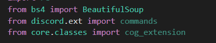
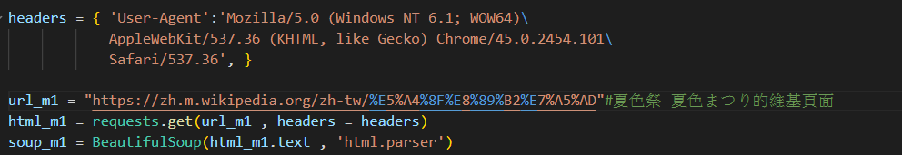

什麼是BeautifulSoup?
BeautifulSoup，又名美麗的湯，就如同魯迅所說過的，吃日料要喝味噌湯，到台南要喝牛肉湯，爬蟲的話就要用美麗的湯。(誤
BeautifulSoup4我們一般簡稱BS4，是用來做網站的html架構解析，如同前面所講的，html碼是以多層標籤作為架構，也因此我們可以利用BS4這個套件來建立其專屬class BeautifulSoup底下的物件，其就包含了原網站html碼的相關結構，像是標籤的父子、兄弟關係，更可以利用其中的搜尋功能找尋標籤名稱、內容或屬性，進而定位到我們感興趣的位置。
在經過基本的pip install後，我們就可以引入bs4了。

之後我們就能像這樣，引入網址後，利用基本request取得html源碼，再利用BS4進行基本解析，建立出soup_m1的物件，之後便可以利用BS4的函式對其定位、分析。

解析器
昨天出現的這句
1 | soup_m1 = BeautifulSoup(html_m1.text, "html.parser") |
其中的html.parser便是使用的解析器，是python內建的。
除了這個外還能用html5lib和lxml但我也沒用過，詳細優缺點可能要google下。
哪天有試了再補充上來吧
解析方法
比較常用到的是find()、find_all()和select()。
find()、find_all()
兩個都是使用html的標籤進行搜尋的。
而這兩者的差別是find()只會回傳第一個符合的結果，find_all()則會回傳所有符合的結果select()
使用CSS選擇器(CSS selectors)來進行搜尋。
CSS之前沒有提到，主要是用來把網站上色的。
其中會用到選擇器來指定特定範圍的HTML進行操作。
select()便是利用這東西的語法來爬的。